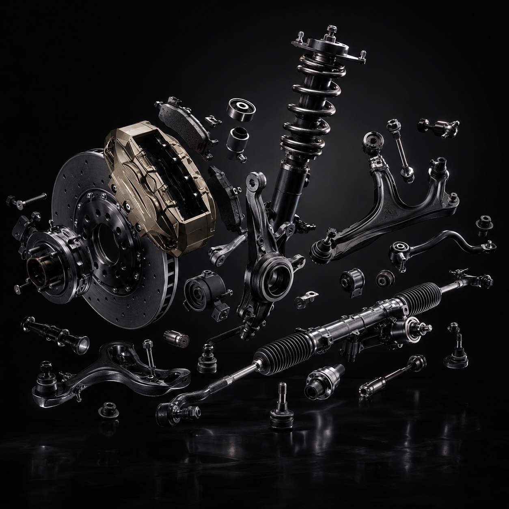
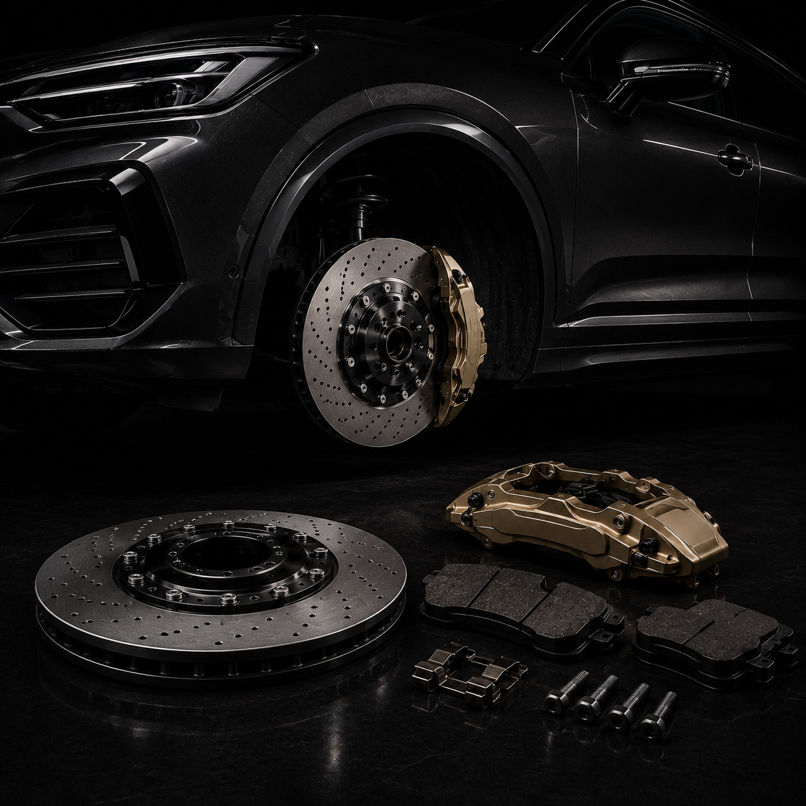
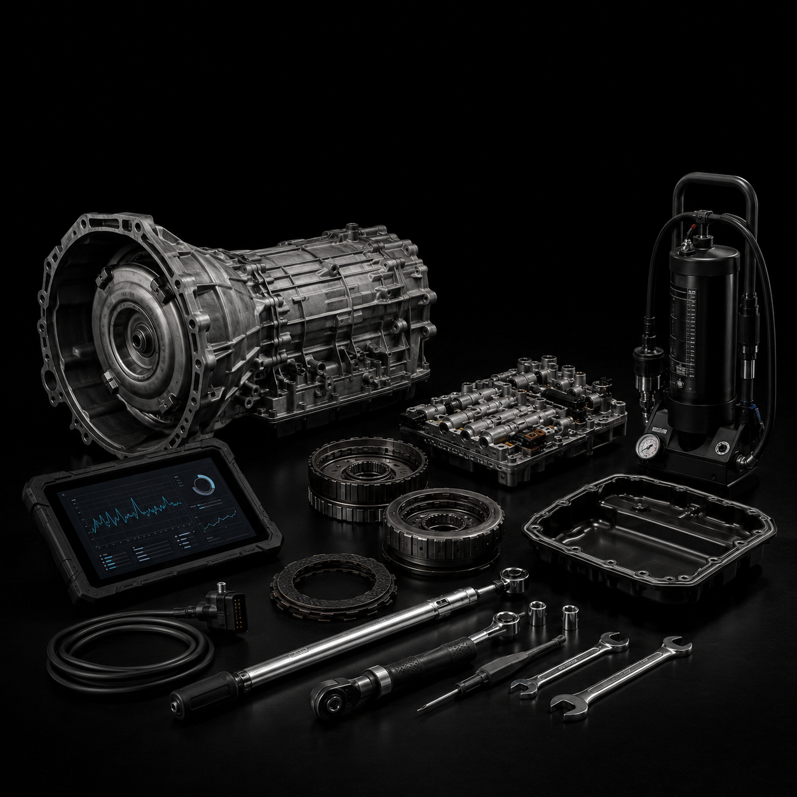
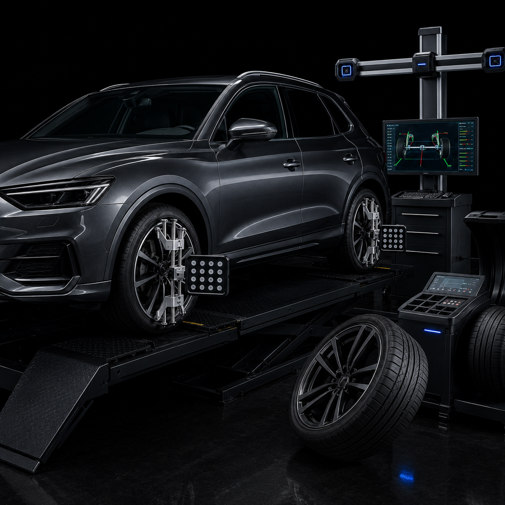
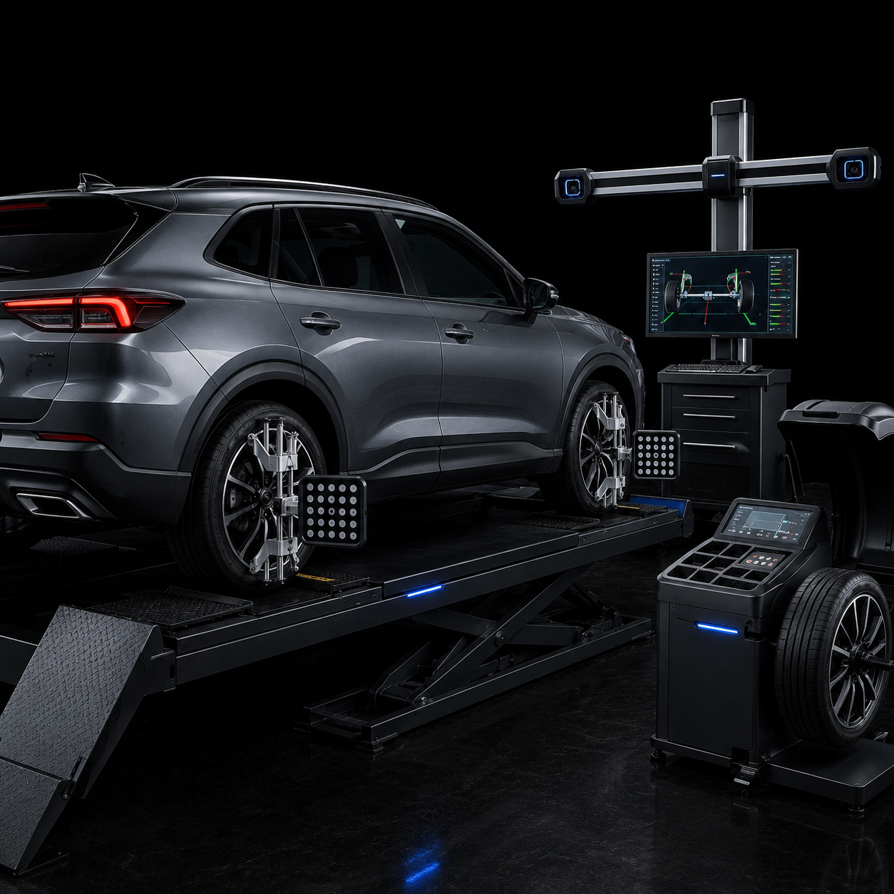
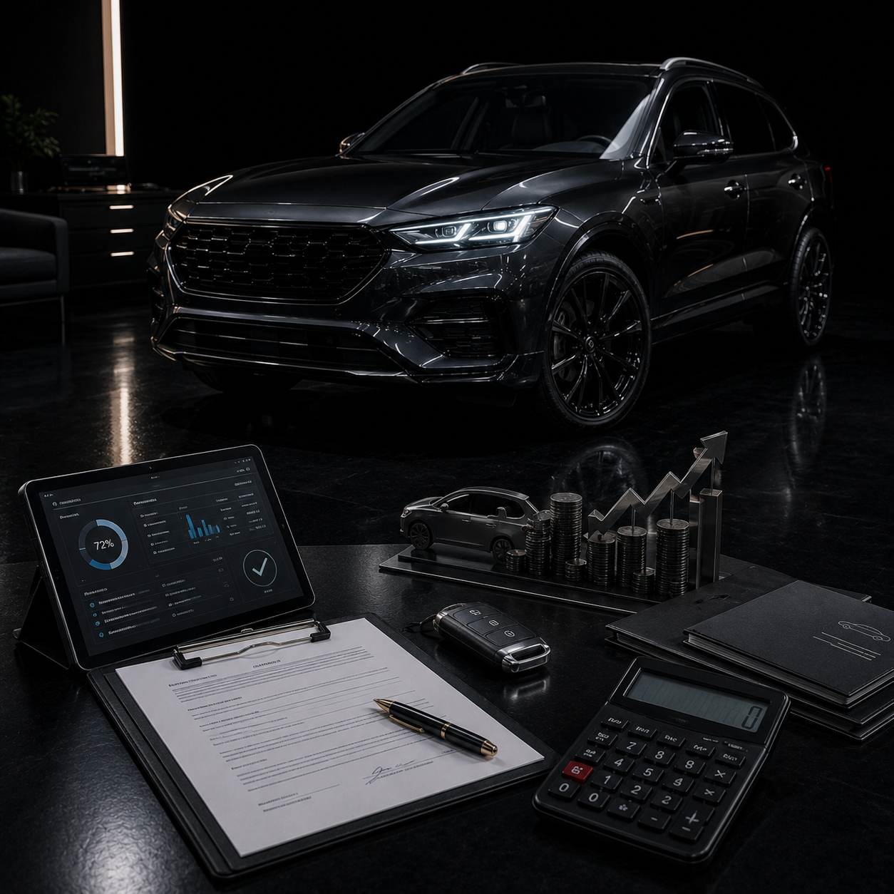
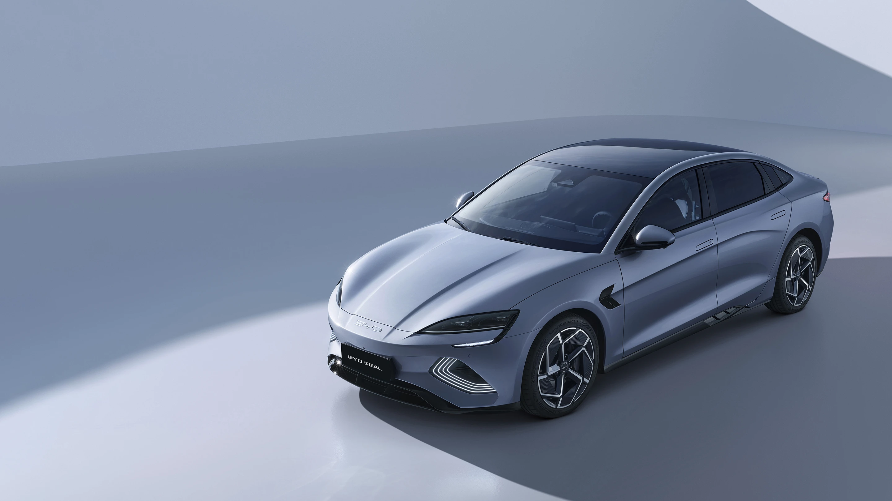

- Amortecedores, molas, bandejas e pivôs
- Diagnóstico de ruídos e folgas
- Estabilidade e conforto recuperados
Seu carro nas mãos de especialistas. Estrutura de ponta, diagnósticos computadorizados e total transparência operacional na Av. Sacadura Cabral,1040 - Alto Umuarama - Uberlândia.
Diagnóstico preciso, peças de alto padrão e transparência do orçamento à entrega.






A nova era automotiva já chegou à oficina. Atendemos veículos elétricos e híbridos com diagnóstico avançado — e com a mesma transparência de orçamento de sempre.

Acompanhe o dia a dia da oficina, dicas de manutenção e o que acontece por dentro da estrutura.
Nossa estrutura premium de ponta a ponta, pronta para receber você e seu veículo.